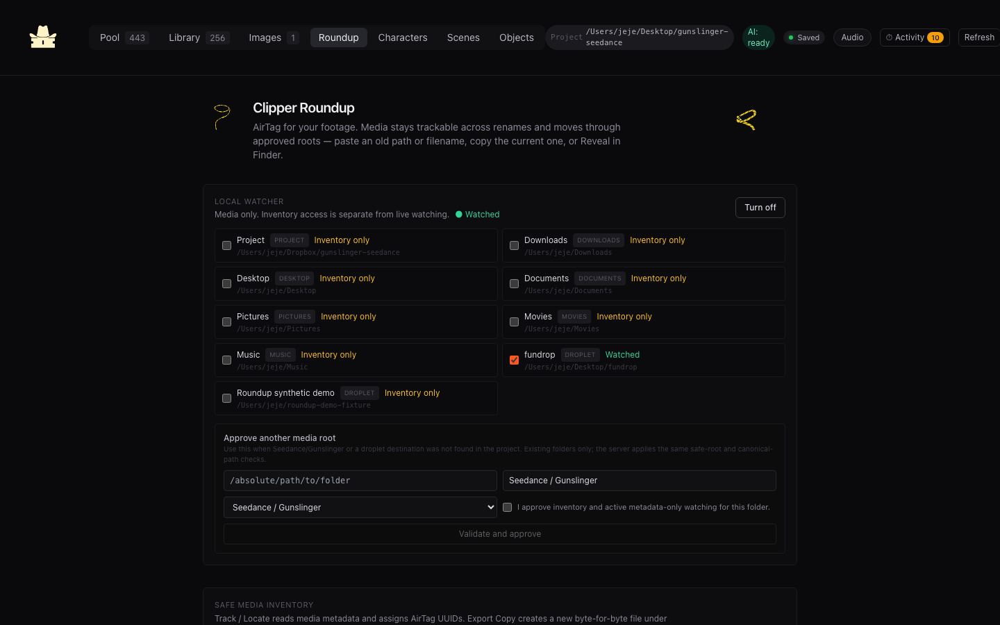
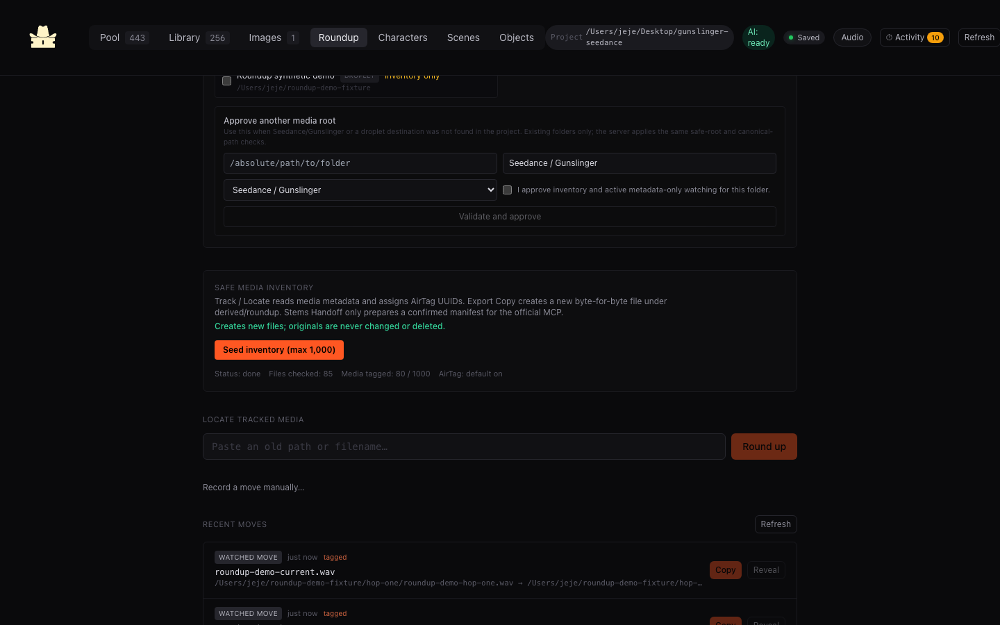
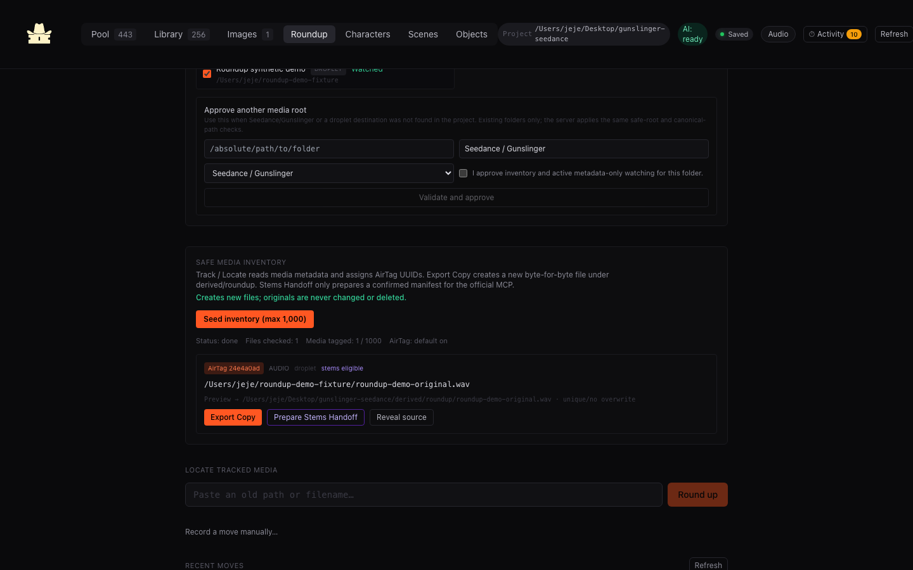
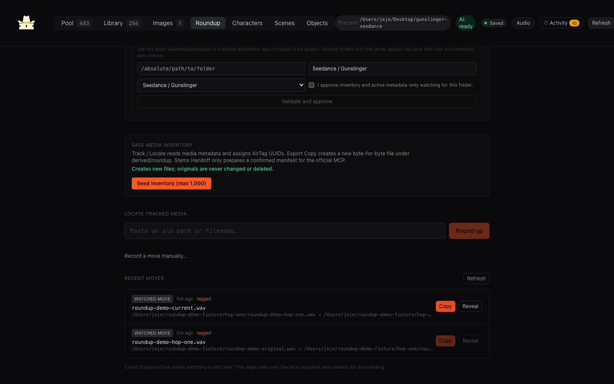
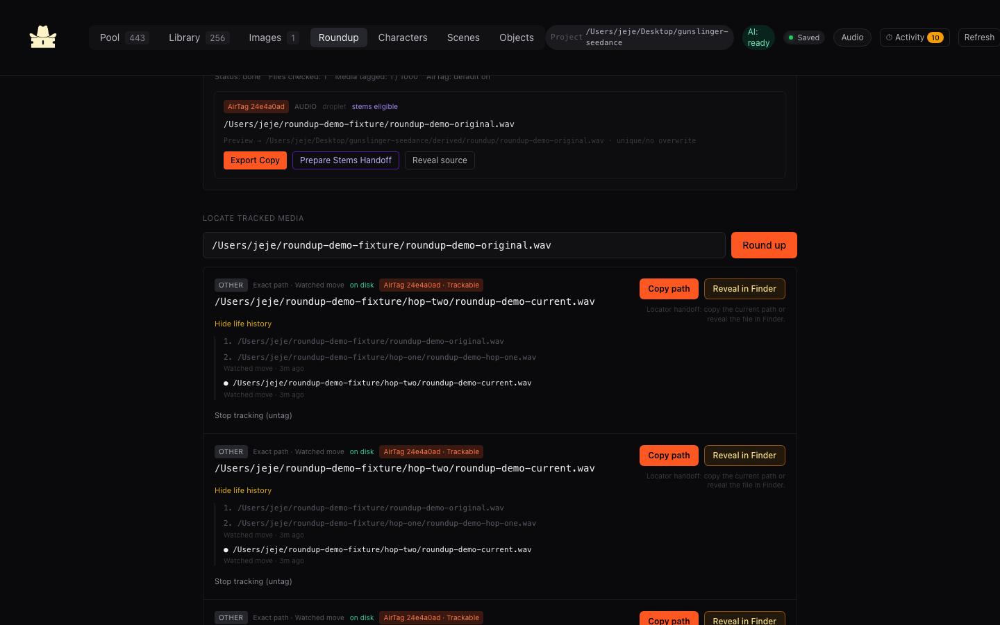
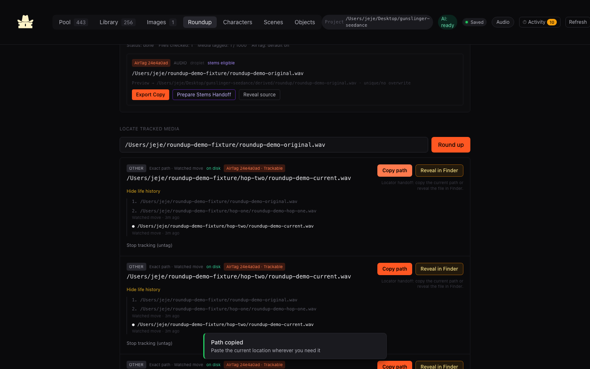

Automated isolated fixture tests passed in this repo.
Tracking proof and native editor bridge
Roundup
Field Guide
Roundup is a general media AirTag and life-history system for approved local roots.
It tracks files through approved roots. Universal Clipper now prepares selected clips, executes the official Stem Studio MCP when configured, validates a flat package, and exposes it to a Premiere Pro 25.6+ UXP panel.
Updated 14 Jul 2026 · Stem MCP connected/setup-required · Premiere 26.2.2 detected · UXP tool absent
Shared vocabulary
What each claim means
“Implemented” is not the same as “proven with your media.” This legend keeps those states separate.
Bounded real aggregate and isolated synthetic tracking evidence now exist.
Preparation or intent only; no downstream processing runs.
No working implementation should be expected.
Safety utilities on isolated fixtures
- Collision-safe project media moves do not overwrite an occupied destination.
- Inventory preview and export-copy preserve source bytes and allocate unique output names.
- Stem handoff fails closed without confirmation; confirmed manifests are unique and preserve source media.
Evidence: npm run safety:test · 4/4 passed · 12 Jul 2026
Local Roundup workflow
- Roundup tab, approved watch roots, bounded inventory up to 1,000/5,000 API max, AirTag UUIDs, lookup, life history, Copy path, and Reveal.
- Watcher primes existing local paths, then pairs future unlink/add events for supported media under enabled roots.
- Clipper pool, library, image moves and selected restore/trash actions record Roundup history after success.
Now proven with read-only Fundrop inventory and an isolated two-hop synthetic rename fixture.
Official stems connector
- Universal Clipper checks the official Stem Studio MCP, queues one source at a time, and never invokes setup or downloads.
- High is recommended; Max requires a separate licensing confirmation.
- Returned full stems and exact sample-boundary clip stems publish only after containment, duration, sample-rate, and channel validation.
Official source MCP 1.0.0 was built from the existing checkout, identity-validated, saved in project-local settings, initialized over stdio, and exposed all six expected tools. Its configured source cache reports no installed model, so Clipper stops at Setup required. No live separation ran.
External host boundaries
- Cloud-native Dropbox or Google Drive watching; local synced folders only behave like ordinary local roots when explicitly approved.
- Premiere Pro 26.2.2 is installed and was already running. UXP Developer Tool is not installed, so the panel was not loaded and no open project was inspected.
- No automatic timeline edits. Optional placement requires a separate explicit panel action.
- Automatic discovery of unresolved generator output or droplet roots outside known project-local locations.
- Guaranteed cross-volume or cross-machine move matching.
A missed watch event or unseeded file may still require manual hunting.
Allowed. They use collision-safe destinations, fail without overwriting, and append Roundup history after the media operation succeeds.
Source-preserving. Inventory reads metadata and adds Roundup metadata; export creates a unique verified copy; stems preparation creates only a unique manifest.
Do this now
The practical workflow
These are real captures from the current Roundup UI at 1440×900. Fundrop appears only as aggregate inventory/status; every visible filename is the synthetic demo fixture.
Fundrop: real read-only inventory; rename demo: synthetic fixture. No export, stems processing, upload, Finder reveal, or external application action was executed.
{kind=link}







What you do next
01
Open Roundup
Start Clipper locally, then choose the Roundup tab. The direct button works when this guide is served by Vite.
Expected: watcher, inventory, missing-media lookup, and recent moves are visible.
Safety: keep the app on 127.0.0.1.
UI walkthrough mock · Roundup entry
Clipper Roundup
AirTag for your footage · copy path → reveal current file
02
Review and approve watch roots
Turn off anything you do not want watched. Keep only the project and chosen Downloads/Desktop roots. Add existing generator output or droplet folders explicitly when needed.
Expected: each enabled root shows an existing canonical path and reason.
Safety: approval is metadata-only; hidden/system trees, symlinks, and paths outside the safe policy are rejected.
UI walkthrough mock · Watch roots
Droplet destination: unresolved
03
Seed a bounded inventory
Start with one small approved folder. Click “Seed inventory (max 1,000)” to assign AirTag identities to existing supported media.
Expected: checked/tagged counts and a per-file AirTag appear.
Safety: inventory skips symlinks and sensitive directories; cancel if the chosen scope looks wrong. It writes metadata, not media.
UI walkthrough mock · Inventory / AirTag
Status: done
Files checked: 18 · Media tagged: 7 / 1,000
AirTag 8b2f10aavideo
…/approved-trial/shot_0142.mov
Preview → …/derived/roundup/shot_0142.mov · unique/no overwrite
04
Leave watching on for future moves
After the watcher says “live,” rename or move media in Finder within approved roots. Roundup pairs a removal and addition during its 45-second window.
Expected: Recent moves gains a “Watched move,” and the AirTag’s current path advances.
Safety: same-volume inode matches are strongest. Cross-volume, delayed, or tool-driven rewrites need real testing and may not pair.
UI walkthrough mock · AirTag trail
Watched movetagged
…/approved-trial/shot_0142.mov
→ …/approved-trial/selects/hero_closeup.mov
Recorded after Finder rename · source move performed by Finder, not Roundup
05
Locate tracked media from any old name
Paste an old path or filename, click Round up, inspect the life history, then Copy path or Reveal in Finder.
Expected: a current on-disk candidate and its old → new trail.
Safety: Roundup does not edit downstream projects. Confirm the candidate before using it.
UI walkthrough mock · Interactive locator demo
/Volumes/OLD/Seedance/out/clip_0142.mov
AirTag matchon disk
…/approved-trial/selects/hero_closeup.mov
Life history · 2 hops
1. /Volumes/OLD/Seedance/out/clip_0142.mov
2. ~/Downloads/clip_0142.mov
● …/selects/hero_closeup.mov
2. ~/Downloads/clip_0142.mov
● …/selects/hero_closeup.mov
General locator handoff
06
Preview, then create an export copy
Review the destination shown on the inventory item. Use Export Copy only when you want a byte-for-byte duplicate under derived/roundup/.
Expected: a new unique output path is copied to the clipboard.
Safety: the original remains present and unchanged; existing outputs are never overwritten.
UI walkthrough mock · Export preview
Source · …/approved-trial/hero_closeup.mov
Preview → …/derived/roundup/hero_closeup_2.mov
source preservednever overwritedigest verified
07
Prepare stems handoff only when intended
For eligible audio/video, click Prepare Stems Handoff and read the external-processing confirmation. This writes a manifest for the official Stem Studio MCP.
Expected: a unique manifest path—not separated stems.
Safety: no model, setup, upload, or processing starts. Official integration and execution are still not complete.
UI walkthrough mock · Stems handoff preview
stems eligiblemanifest only
Prepare for official Stem Studio MCP?
External processing may receive the media. No model will run now.
Implemented package MVP
Universal Clipper package
The Library workflow builds one shallow, collision-safe package, validates official MCP stems, and serves a package-ID manifest to the native Premiere panel.
Library → package
- Select up to 500 Library clips and preview them grouped by source.
- Create a unique package beneath derived/universal-clipper/ while leaving originals unchanged.
- Copy each full source and materialize each selected range through the adaptive smart-cut pipeline.
Shallow handoff and clip sheets
- Keep sibling source, clip, and available stem files adjacent in one flat media/ folder.
- Write linked JSON, CSV, and HTML clip sheets with ranges, labels, tags, AirTag lineage, and relationships.
- Reveal the package, copy its folder path, open the clip sheet, or download CSV.
Deterministic adjacent names
scene137.mov scene137__SFX.wav scene137__clip-01.mov scene137__clip-01__SFX.wav clip-sheet.json
Real package behavior, shown below with synthetic fixtures. Only validated, existing stems appear as WAV files.
Full and clip-aligned stems
- The official Stem Studio MCP runs only after confirmation and only when Python, dependencies, and the configured model cache all report present.
- Full-source outputs remain beneath derived/stems/; clip stems are trimmed from them at exact rounded sample boundaries.
- Offline guards force an incomplete model cache to fail instead of downloading weights.
Configured source MCP 1.0.0 connected successfully, but its source-cache model check failed closed. Live fixture: not run.
Native Premiere UXP panel
- Targets Premiere Pro 25.6+ and uses documented project, bin, media-path, import, and sequence-editor APIs.
- Canonical-path-first preview imports only missing assets into shallow source bins; retry is idempotent.
- Plugin 0.1.0 rebuilt and verified against manifest v5, Premiere 25.6 minimum, and the sole loopback network permission.
- Premiere 26.2.2 is installed/running; UXP Developer Tool is absent, so no project or timeline was touched.
Authoritative interchange
- FCPXML or EDL generation waits for authoritative frame rate, rational frame times, and source timecode metadata.
- Seconds remain canonical in the current clip sheet.
- Interchange will require tested import behavior rather than fabricated timeline claims.
Screenshot boundary: the captures below are the previous synthetic media-package UI, not proof of the new stems execution or Premiere panel. Current connector and plugin claims come from automated fixture/build results; no replacement screenshot is fabricated.
No current Stem Studio execution or Premiere UXP screenshot is published here: neither external runtime was available, and an outdated or fabricated capture would overstate verification. The prior package-only captures remain in the tutorial artifact archive, not as current feature proof.
Evidence-driven gates
Roadmap and honest progress
Percentages are two different measures. Implementation coverage is not real-world confidence.
Local workflow implementation
~97%Package preparation, strict project-local MCP configuration, offline model guards, state machine, validation/publication, authenticated package APIs, Clipper UI, and Premiere UXP plugin are implemented. Live model and host validation remain.
Recorded workflow confidence
~80%The official MCP now initializes and reports setup state on this Mac, while isolated package/stem/protocol/panel fixtures and builds pass. A model-ready configured cache and UXP Developer Tool are the remaining external gates.
Verified
Local isolated MVP
Evidence
Four fixture safety tests pass for no-overwrite moves, source-preserving copies, and confirmed manifest creation.
Exit criteria
Passed at utility/safety layer. UI and watcher behavior move to the trial gate.
Next
Small approved real-folder trial
Evidence needed
One disposable or backed-up folder explicitly chosen by the user; no broad home-folder scan.
Exit criteria
Bounded seed completes; source files and timestamps remain unchanged; expected AirTags appear.
Verified
GFun watcher route
Evidence
Downloads + fundrop report Watched on the live FSEvents backend with no watcher error.
Boundary
Other broad roots remain inventory-only. Isolated testing proves same-identity atomic moves, not copy or transcode identity.
Recorded
Two-hop media locator
Evidence
A seeded synthetic WAV moved through two external hops while the watcher stayed healthy.
Result
Original path resolves to the current file with one AirTag UUID, full history, Copy path, and Reveal controls.
Later
Full-library bounded seed
Evidence needed
Small trial metrics establish scan time, tag count, skips, and acceptable scope.
Exit criteria
Approved roots seed in bounded batches with cancellation and no media mutation.
Setup required
Official stem separation
Current state
Official MCP 1.0.0 is path-validated, configured, protocol-connected, and reports MPS/Python dependencies. The configured source model cache is absent, so the UI correctly stops at Setup required.
Remaining boundary
Make the model available through Stem Studio's supported runtime, then perform one generated High fixture. Clipper's offline guards prevent an implicit download.
Later
Dropbox / Google Drive
Current state
Synced local folders can be trialed only as approved local paths. Cloud-native APIs and remote events do not exist.
Exit criteria
Explicit adapter, auth isolation, remote move identity, conflict handling, and tests—without leaking parent environment.
Open modes
App, assets, and source
Relative links work from file:// and from Vite’s /roundup/status.html.
Open the Roundup tabUse while Vite is serving the app.
Exact supplied lasso.svgVector mark used throughout this guide and the app.
Exact trimmed lasso-spin.gifActual supplied animation used in the hero and locator demo.
RoundupView.tsxCurrent UI source for roots, inventory, lookup, exports, and handoff.
Roundup API routesApproval, watcher, inventory, lookup, export, and handoff endpoints.
Isolated safety testsEvidence for the Verified claims above.
Universal Clipper contractImplemented package layout, stem validation, fidelity, and interchange boundary.
Universal Clipper testsIsolated planner, package, stem-return, and source-preservation evidence.
{kind=link}
{kind=link}